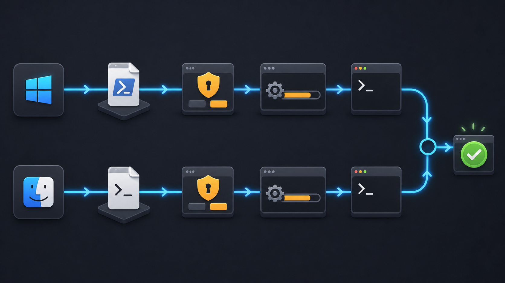
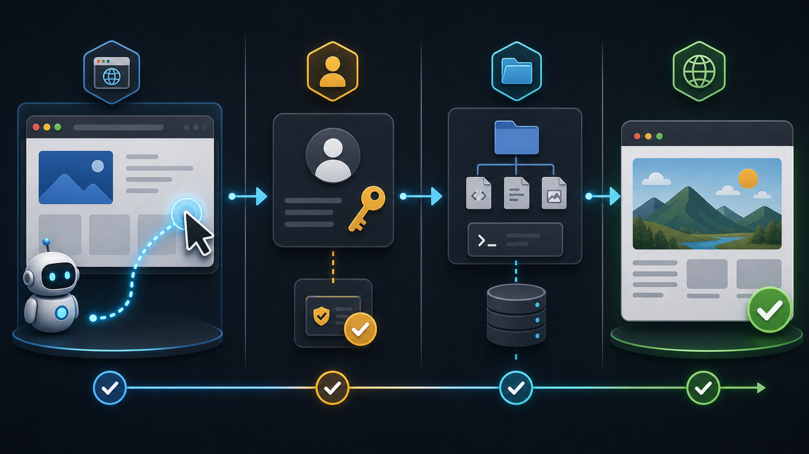
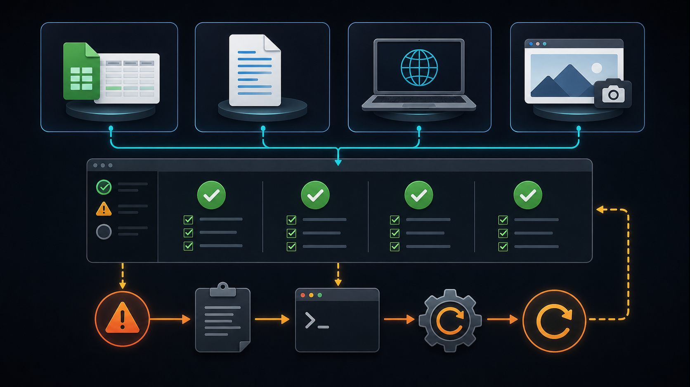

這是一份給「完全沒有寫過程式」的老師的逐步安裝指南。照著做，就能在自己的筆電上建立一套可運作的 AI Agent 工作環境。建議先看「一鍵安裝」；若遇到問題，再參考「手動安裝」與「常見問題」。
這份指南會在你的筆電上安裝下列工具：
| 工具 | 用途 |
|---|---|
| VS Code | 程式碼編輯器，也是日後操作 AI Agent 的主要視窗 |
| Git | 版本管理工具，許多 AI 工具會用到 |
| Node.js + npm | JavaScript 執行環境，用來啟動 local web server 與安裝 Codex CLI |
| uv (Python) | 管理 Python 與套件，安裝/更新/移除都很簡單 |
| Codex CLI | OpenAI 的 AI Agent 命令列工具，可用免費或 ChatGPT Plus 帳號 |
| Playwright MCP | Codex 的瀏覽器外掛 (plugin)，讓 AI Agent 能開網頁、點擊、填表單與擷取畫面 |
| GitHub CLI (gh) | 用瀏覽器登入 GitHub，下載 (clone) 專案、推送與部署 GitHub Pages |
| VS Code 擴充套件 | Python、Jupyter、Git、JavaScript，以及 Codex AI 編程代理 |
本工作坊會同時開啟 VS Code、Node.js、Python 與一個由 Codex 操控的 Chromium 瀏覽器。請先確認你的筆電符合下列規格 (標示「建議」者為較順暢的門檻)。
| 項目 | 最低需求 | 建議 |
|---|---|---|
| 作業系統 | Windows 11 (64 位元)，已裝 App Installer (winget) | Windows 11 最新版 |
| 處理器 | 64 位元 x64 雙核心 | 四核心以上 |
| 記憶體 (RAM) | 8 GB | 16 GB |
| 可用磁碟空間 | 10 GB | 20 GB 以上 |
| 權限 | 系統管理員權限 (可安裝軟體、允許 UAC) | 同左 |
| 網路 | 穩定寬頻，可存取 GitHub 與 AI 服務 | 同左 |
| 瀏覽器 | Microsoft Edge 或 Chrome (供登入流程) | 同左 |
| 項目 | 最低需求 | 建議 |
|---|---|---|
| 作業系統 | macOS 12 Monterey | macOS 13 Ventura 以上 |
| 處理器 | Apple Silicon (M1 以上) 或 Intel x86_64 | Apple Silicon |
| 記憶體 (RAM) | 8 GB | 16 GB |
| 可用磁碟空間 | 10 GB | 20 GB 以上 |
| 權限 | 系統管理員帳號 (可執行 Homebrew 與 sudo) | 同左 |
| 網路 | 穩定寬頻，可存取 GitHub 與 AI 服務 | 同左 |
| 瀏覽器 | Safari 或 Chrome (供登入流程) | 同左 |
請依你的作業系統選擇下方分頁，照著三個步驟做。腳本可以重複執行：萬一中途出錯，重開終端機後再跑一次即可，已安裝的工具會自動略過。

向授課老師索取 setup-windows.bat 檔案 (或從工作坊提供的連結下載)，並存到「下載 (Downloads)」資料夾。
最簡單的方式：到「下載」資料夾用滑鼠雙擊 setup-windows.bat 即可開始安裝。
若你想從終端機執行，先按 Win + X 選「終端機 (Terminal)」，再依你看到的提示字元貼上對應指令：
PowerShell (提示字元為 PS C:\…>)：
& "$HOME\Downloads\setup-windows.bat"
命令提示字元 Command Prompt (提示字元為 C:\…>)：
"%USERPROFILE%\Downloads\setup-windows.bat"
按 Enter 後等待。安裝過程可能跳出權限或使用者帳戶控制 (UAC) 視窗，請按「是 / 允許」。結束時畫面會列出 [OK] 與 [FAIL] 的數量總結。腳本可重複執行，出錯就重開終端機再跑一次。
向授課老師索取 setup-macos.sh 檔案 (或從工作坊提供的連結下載)，並存到「下載 (Downloads)」資料夾。
按 Command + 空白鍵 開啟 Spotlight，輸入「Terminal」後按 Enter。
bash ~/Downloads/setup-macos.sh
按 Enter 後等待。安裝 Homebrew 時可能要求輸入「登入密碼」(輸入時畫面不會顯示字元，屬正常現象)。結束時畫面會列出每項工具的 OK 或 FAIL 總結。
如果一鍵安裝某項失敗，或你想自己一步一步來，可依下表逐項安裝。安裝完每項後，關閉並重新開啟終端機，再用「檢查清單」確認。
| 工具 | 下載 / 安裝方式 | 備註 |
|---|---|---|
| VS Code | code.visualstudio.com/download | 下載後雙擊安裝；安裝時勾選「加入 PATH」 |
| Git | git-scm.com/downloads | 一路按「下一步」採用預設值即可 |
| Node.js LTS | nodejs.org | 選擇「LTS」版本，安裝後即有 npm |
| uv (Python) | docs.astral.sh/uv | 依該頁的一行安裝指令操作 |
| Codex CLI | 於終端機執行 npm install -g @openai/codex | 需先裝好 Node.js |
| Playwright MCP | 於終端機執行 npx -y playwright install chromium 下載瀏覽器，再執行 codex mcp add playwright -- npx -y @playwright/mcp@latest 註冊給 Codex | 需先裝好 Node.js 與 Codex CLI |
| GitHub CLI | cli.github.com | 裝好後執行 gh auth login |
開啟 VS Code，點左側方塊狀的 Extensions 圖示，搜尋並安裝下列項目；或在終端機逐行執行下方指令。
ms-python.python — Pythonms-toolsai.jupyter — Jupyter Notebookeamodio.gitlens — Gitdbaeumer.vscode-eslint — JavaScriptopenai.chatgpt)code --install-extension ms-python.python code --install-extension ms-toolsai.jupyter code --install-extension eamodio.gitlens code --install-extension dbaeumer.vscode-eslint code --install-extension openai.chatgpt
Cmd+Shift+P，執行「Shell Command: Install 'code' command in PATH」。codex 後按 Enter。codex "請建立一個名為 hello.txt 的檔案，內容寫上 Hello, AI Agent"
若 Agent 成功建立檔案並回報結果，代表 AI Agent 環境已可運作。
openai.chatgpt) 與這裡的 Codex CLI 共用同一個 ChatGPT 帳號，登入一次即可同時在終端機與編輯器中使用。要讓 AI Agent 能開網頁、點擊、填表單與擷取畫面，需要為 Codex 安裝 Playwright MCP 外掛 (plugin)。一鍵安裝腳本已經幫你裝好並註冊；若你採用手動安裝，請執行下面兩個步驟。

npx -y playwright install chromium
codex mcp add playwright -- npx -y @playwright/mcp@latest
codex mcp list
清單中應出現 playwright 且狀態為 enabled。接著可請 Codex 開啟一個網頁並擷取畫面，驗證它能操作瀏覽器。
playwright 已註冊，重跑安裝腳本會自動略過。要把專案下載 (clone) 下來、或把網站上傳到 GitHub，需要先讓電腦「連上」你的 GitHub 帳號。我們使用 GitHub CLI (gh)，全程用瀏覽器登入，不需要產生 SSH 金鑰、也不需要在終端機輸入密碼。
gh。若顯示「找不到 gh」，請關閉並重新開啟終端機。gh auth login
依畫面方向鍵選擇，建議選項依序為：GitHub.com → HTTPS → 詢問是否用 Git 認證時選 Yes → Login with a web browser。畫面會顯示一組一次性代碼 (one-time code)，按 Enter 開啟瀏覽器，貼上代碼並授權即可。完成後它也會自動設定好 git，之後 clone / push 都不必再登入。
gh auth status
commit 需要知道你的名字與信箱，請把下方換成你自己的資料：
git config --global user.name "你的名字" git config --global user.email "你的信箱@example.com"
gh repo clone 你的帳號/專案名稱
GitHub Pages 可以把一個靜態網站 (例如只有 index.html 的資料夾) 免費發佈成公開網址。請先用終端機進到你的網站資料夾，再依序執行。
git init git add . git commit -m "first site"
下面一行會建立一個公開 repo、設定遠端並把內容推上去 (請把 我的網站 換成你想要的名稱)：
gh repo create 我的網站 --public --source=. --remote=origin --push
方法 A (指令)：
gh api -X POST repos/{owner}/{repo}/pages -f "source[branch]=main" -f "source[path]=/"方法 B (網頁，較直覺)：到該 repo 的 Settings → Pages，在 Branch 選 main、資料夾選 / (root)，按 Save。
https://你的帳號.github.io/我的網站/，可能需要等一分鐘左右才會生效。下列四項對應 Module 1 的驗證任務。可直接把每個指令貼給 codex，或自行在終端機執行。

| 任務 | 內容 | 驗證重點 |
|---|---|---|
| Python 驗證 | 讀取 Excel、整理資料、輸出新的 Excel | 套件與檔案處理可運作 |
| Word 驗證 | 讀取 Word、產生修改後的 Word | Office 文件處理可運作 |
| JavaScript 驗證 | 啟動簡單的 local web server | Node.js 與 local host 可運作 |
| 瀏覽器驗證 | 請 Codex 透過 Playwright MCP 開啟指定網頁並擷取畫面或讀取內容 | 瀏覽器外掛與 AI Agent 操作瀏覽器可運作 |
uv init verify-python cd verify-python uv add openpyxl python-docx
接著請 AI Agent 幫你寫一支程式：讀取一個 Excel、整理後輸出新檔，再讀取一個 Word、輸出修改後的版本。
npx http-server
看到網址 (例如 http://127.0.0.1:8080) 後，用瀏覽器開啟即代表成功。按 Ctrl + C 可停止。
確認 codex mcp list 中的 playwright 為 enabled 後，請 Codex 開啟一個網頁並擷取畫面：
codex "用瀏覽器開啟 https://example.com，並把整頁擷圖存成 example.png"
若 Agent 成功產生截圖，代表瀏覽器外掛可運作。
在終端機逐行執行下列指令，每一行都應顯示版本號 (而非「找不到指令」)。
code --version git --version node -v npm -v uv --version gh --version codex --version codex mcp list
codex mcp list 顯示 playwright 且狀態為 enabledcodex 能登入並完成 Hello, AI Agent 測試| 症狀 | 原因與解法 |
|---|---|
| 'xxx' 不是內部或外部命令 / command not found | 多半是 PATH 還沒更新。關閉並重新開啟終端機後再試；仍不行就重跑一鍵安裝腳本。 |
| 找不到 winget (Windows) | 到 Microsoft Store 安裝「應用程式安裝程式 (App Installer)」，或先用手動安裝。 |
| 找不到 brew (macOS) | 重開終端機讓 Homebrew 進入 PATH；或重跑一鍵安裝腳本 (它會自動安裝 Homebrew)。 |
| 雙擊 .bat 後黑視窗一閃就消失 | 改從已開啟的終端機執行 (見「一鍵安裝」的指令)，才看得到訊息；或在腳本最後保留 pause。 |
| 找不到 gh (GitHub CLI) | 關閉並重新開啟終端機；仍不行就重跑一鍵安裝腳本。 |
| codex mcp list 沒有 playwright | 手動執行 codex mcp add playwright -- npx -y @playwright/mcp@latest 重新註冊；確認 Codex CLI 已安裝。 |
| Codex 操作瀏覽器時找不到瀏覽器 (browser not found) | 執行 npx -y playwright install chromium 重新下載瀏覽器。 |
| gh auth login 沒有自動開啟瀏覽器 | 把畫面顯示的網址複製起來，自己貼到瀏覽器開啟，再輸入一次性代碼。 |
| GitHub Pages 顯示 404 | 等約一分鐘再重新整理；並確認 Pages 的 Branch 為 main、資料夾為 / (root)。 |
| 下載很慢或卡住 | 多半是網路或代理 (proxy) 問題。換較穩定的網路，或請授課老師協助設定 proxy。 |
| 一直跳出權限/UAC 視窗 | 屬正常現象，按「是 / 允許」即可。 |
A step-by-step setup guide for teachers with zero programming experience. Follow it to get a working AI Agent environment on your own laptop. Start with "One-command setup"; if anything fails, use "Manual install" and "Troubleshooting."
This guide installs the following tools on your laptop:
| Tool | Purpose |
|---|---|
| VS Code | Code editor and your main window for driving the AI Agent later |
| Git | Version-control tool used by many AI tools |
| Node.js + npm | JavaScript runtime, used to start a local web server and install the Codex CLI |
| uv (Python) | Manages Python and packages; easy to install, update, and remove |
| Codex CLI | OpenAI's AI Agent command-line tool; works with a free or ChatGPT Plus account |
| Playwright MCP | Codex browser plugin that lets the AI Agent open pages, click, fill forms, and take screenshots |
| GitHub CLI (gh) | Sign in to GitHub via browser; clone projects, push, and deploy GitHub Pages |
| VS Code extensions | Python, Jupyter, Git, JavaScript, and the Codex coding agent |
This workshop runs VS Code, Node.js, Python, and a Chromium browser driven by Codex at the same time. Make sure your laptop meets the specs below ("Recommended" is the threshold for a smoother experience).
| Item | Minimum | Recommended |
|---|---|---|
| Operating system | Windows 11 (64-bit) with App Installer (winget) | Windows 11, fully updated |
| Processor | 64-bit x64 dual-core | Quad-core or better |
| Memory (RAM) | 8 GB | 16 GB |
| Free disk space | 10 GB | 20 GB or more |
| Privileges | Administrator rights (install software, allow UAC) | Same |
| Network | Stable broadband reaching GitHub and AI services | Same |
| Browser | Microsoft Edge or Chrome (for sign-in flows) | Same |
| Item | Minimum | Recommended |
|---|---|---|
| Operating system | macOS 12 Monterey | macOS 13 Ventura or later |
| Processor | Apple Silicon (M1+) or Intel x86_64 | Apple Silicon |
| Memory (RAM) | 8 GB | 16 GB |
| Free disk space | 10 GB | 20 GB or more |
| Privileges | Admin account (run Homebrew and sudo) | Same |
| Network | Stable broadband reaching GitHub and AI services | Same |
| Browser | Safari or Chrome (for sign-in flows) | Same |
Pick your operating system below and follow the three steps. The scripts are safe to re-run: if something fails midway, reopen Terminal and run it again; installed tools are skipped automatically.
Get setup-windows.bat from your instructor (or the workshop download link) and save it to your Downloads folder.
Easiest way: open your Downloads folder and double-click setup-windows.bat to start the install.
If you prefer running it from a terminal, press Win + X and choose "Terminal", then paste the line that matches your prompt:
PowerShell (prompt looks like PS C:\…>):
& "$HOME\Downloads\setup-windows.bat"
Command Prompt (prompt looks like C:\…>):
"%USERPROFILE%\Downloads\setup-windows.bat"
Press Enter and wait. A permission or User Account Control (UAC) window may appear; click "Yes / Allow." At the end you will see a count of [OK] and [FAIL] items. The script is safe to re-run: if something fails, reopen Terminal and run it again.
Get setup-macos.sh from your instructor (or the workshop download link) and save it to your Downloads folder.
Press Command + Space to open Spotlight, type "Terminal", and press Enter.
bash ~/Downloads/setup-macos.sh
Press Enter and wait. Installing Homebrew may ask for your login password (characters will not show as you type, which is normal). At the end you will see an OK/FAIL summary per tool.
If one item fails in the one-command setup, or you prefer to do it step by step, install each tool from the table. After each one, close and reopen Terminal, then confirm with the checklist.
| Tool | Download / install | Note |
|---|---|---|
| VS Code | code.visualstudio.com/download | Double-click to install; tick "Add to PATH" |
| Git | git-scm.com/downloads | Accept the defaults (keep clicking Next) |
| Node.js LTS | nodejs.org | Choose the "LTS" version; npm comes with it |
| uv (Python) | docs.astral.sh/uv | Use the one-line install command on that page |
| Codex CLI | Run npm install -g @openai/codex in Terminal | Install Node.js first |
| Playwright MCP | Run npx -y playwright install chromium to get the browser, then codex mcp add playwright -- npx -y @playwright/mcp@latest to register it with Codex | Install Node.js and the Codex CLI first |
| GitHub CLI | cli.github.com | After install, run gh auth login |
Open VS Code, click the square Extensions icon on the left, search for and install the items below; or run the commands in Terminal.
ms-python.python — Pythonms-toolsai.jupyter — Jupyter Notebookeamodio.gitlens — Gitdbaeumer.vscode-eslint — JavaScriptopenai.chatgpt)code --install-extension ms-python.python code --install-extension ms-toolsai.jupyter code --install-extension eamodio.gitlens code --install-extension dbaeumer.vscode-eslint code --install-extension openai.chatgpt
Cmd+Shift+P, and run "Shell Command: Install 'code' command in PATH".codex and press Enter.codex "Create a file named hello.txt containing the text Hello, AI Agent"
If the agent creates the file and reports back, your AI Agent environment is working.
openai.chatgpt) shares the same ChatGPT account as the Codex CLI here, so signing in once works in both the terminal and the editor.To let the AI Agent open pages, click, fill forms, and take screenshots, install the Playwright MCP plugin for Codex. The one-command setup already installs and registers it; if you went the manual route, run the two steps below.
npx -y playwright install chromium
codex mcp add playwright -- npx -y @playwright/mcp@latest
codex mcp list
You should see playwright with status enabled. Then ask Codex to open a page and screenshot it to confirm it can drive the browser.
playwright is already registered, re-running the setup script skips it.To clone a project or upload a site to GitHub, your computer first needs to be "connected" to your GitHub account. We use the GitHub CLI (gh), which signs in entirely through the browser: no SSH keys to generate, and no password typed in the terminal.
gh for you. If you see "gh: command not found", close and reopen Terminal.gh auth login
Use the arrow keys to choose, in order: GitHub.com → HTTPS → Yes when asked to authenticate Git → Login with a web browser. A one-time code appears; press Enter to open the browser, paste the code, and authorize. It also configures git automatically, so future clone / push need no further login.
gh auth status
Commits need your name and email. Replace the values below with your own:
git config --global user.name "Your Name" git config --global user.email "you@example.com"
gh repo clone your-account/your-repo
GitHub Pages publishes a static website (e.g. a folder with just an index.html) to a free public URL. In Terminal, first go into your website folder, then run these in order.
git init git add . git commit -m "first site"
This one line creates a public repo, sets the remote, and pushes (replace my-site with the name you want):
gh repo create my-site --public --source=. --remote=origin --push
Option A (command):
gh api -X POST repos/{owner}/{repo}/pages -f "source[branch]=main" -f "source[path]=/"Option B (web, more visual): go to the repo's Settings → Pages, set Branch to main and folder to / (root), then Save.
https://your-account.github.io/my-site/. It can take about a minute to go live.These four match the Module 1 verification tasks. Paste each command to codex, or run them yourself in Terminal.
| Task | Content | Focus |
|---|---|---|
| Python check | Read an Excel file, process data, output a new Excel | Packages and file handling work |
| Word check | Read a Word file, produce a modified Word | Office document handling works |
| JavaScript check | Start a simple local web server | Node.js and local host work |
| Browser check | Ask Codex to open a given page via Playwright MCP and screenshot or read it | Browser plugin and agent browser control work |
uv init verify-python cd verify-python uv add openpyxl python-docx
Then ask the AI Agent to write a program: read an Excel and output a new one, then read a Word and output a modified version.
npx http-server
When you see a URL (e.g. http://127.0.0.1:8080), open it in a browser to confirm. Press Ctrl + C to stop.
After confirming playwright is enabled in codex mcp list, ask Codex to open a page and screenshot it:
codex "Open https://example.com in a browser and save a full-page screenshot as example.png"
If the agent produces the screenshot, the browser plugin works.
Run each command in Terminal; every line should print a version number (not "command not found").
code --version git --version node -v npm -v uv --version gh --version codex --version codex mcp list
codex mcp list shows playwright with status enabledcodex signs in and the Hello, AI Agent test passes| Symptom | Cause and fix |
|---|---|
| 'xxx' is not recognized / command not found | Usually PATH has not refreshed. Close and reopen Terminal and try again; if it still fails, re-run the one-command script. |
| winget not found (Windows) | Install "App Installer" from the Microsoft Store, or use the manual install. |
| brew not found (macOS) | Reopen Terminal so Homebrew is on PATH; or re-run the one-command script (it installs Homebrew automatically). |
| Double-clicking the .bat flashes a black window and closes | Run it from an already-open Terminal (see "One-command setup") so you can read the messages; the script also keeps a pause at the end. |
| gh: command not found (GitHub CLI) | Close and reopen Terminal; if it still fails, re-run the one-command script. |
| playwright missing from codex mcp list | Re-register it manually with codex mcp add playwright -- npx -y @playwright/mcp@latest; make sure the Codex CLI is installed. |
| "browser not found" when Codex drives the browser | Run npx -y playwright install chromium to download the browser again. |
| gh auth login did not open a browser | Copy the URL shown on screen, open it in your browser yourself, then enter the one-time code. |
| GitHub Pages shows 404 | Wait about a minute and refresh; confirm Pages Branch is main and folder is / (root). |
| Downloads are slow or stuck | Usually a network or proxy issue. Switch to a more stable network, or ask your instructor to help configure the proxy. |
| Repeated permission/UAC prompts | This is normal; click "Yes / Allow". |